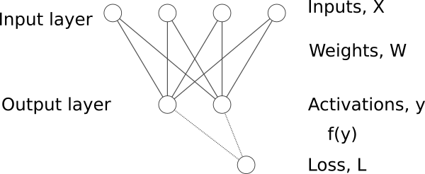
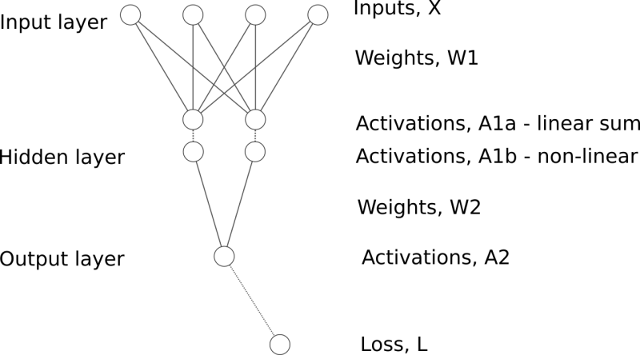

def lin_grad(x, w, b, y):
b.g = y.g.sum(dim=0)
w.g = x.T @ y.g
x.g = y.g @ w.TLet’s have \(y = w \cdot x + b\). Application of the rules of differentiation is simple, e.g.
\[\frac{\mathrm{d}y}{\mathrm{d}x} = w , \quad \frac{\mathrm{d}y}{\mathrm{d}w} = x, \quad \frac{\mathrm{d}y}{\mathrm{d}b} = 1\]
The change in \(y\) is porportional to the change in \(x\). The bigger is \(w\), the bigger is the change of \(y\) for the same change of \(x\).
Let’s \(L = f(y) = f(y(x))\). Application of the chain rule is simple, e.g.
\[\frac{\mathrm{d}L}{\mathrm{d}x} = \frac{\mathrm{d}f(y)}{\mathrm{d}y} \cdot \frac{\mathrm{d}y}{\mathrm{d}x} = \frac{\mathrm{d}L}{\mathrm{d}y} \cdot w\] \[\frac{\mathrm{d}L}{\mathrm{d}w} = \frac{\mathrm{d}f(y)}{\mathrm{d}y} \cdot \frac{\mathrm{d}y}{\mathrm{d}w} = \frac{\mathrm{d}L}{\mathrm{d}y} \cdot x\] \[\frac{\mathrm{d}L}{\mathrm{d}b} = \frac{\mathrm{d}f(y)}{\mathrm{d}y} \cdot \frac{\mathrm{d}y}{\mathrm{d}b} = \frac{\mathrm{d}L}{\mathrm{d}y} \cdot 1\].
The multidimensional case is not so simple. Functions with multiple inputs and multiple outputs have multiple partial derivatives which need to be arranged and stored properly. Applying this for batches of data complicates the picture even more.
The derivative of a function (transformation \(\psi\)) with multiple inputs \(\mathbf{x} \in \mathbb{R}^M\) and multiple outputs \(\mathbf{y} \in \mathbb{R}^H\) is a matrix containing the partial derivatives of each output with respect to each input (the so called Jacobian of the transformation, \(\frac{\partial{\mathbf{y}}}{\partial{\mathbf{x}}} \in \mathbb{R}^{M \times H}\)). For example, if \(M=4\) and \(H=2\) we can write:
\(\mathbf{y} = \psi(\mathbf{x})\),
\(\mathbf{x} = \begin{bmatrix} x_1 \\ x_2 \\ x_3 \\ x_4\end{bmatrix}, \quad \mathbf{y} = \begin{bmatrix} y_1 \\ y_2 \end{bmatrix}\)
\(\frac{\partial{\mathbf{y}}}{\partial{\mathbf{x}}} = \begin{bmatrix} \frac{\partial{y_1}}{\partial{x_1}} & \frac{\partial{y_1}}{\partial{x_2}} & \frac{\partial{y_1}}{\partial{x_3}} & \frac{\partial{y_1}}{\partial{x_4}}\\ \frac{\partial{y_2}}{\partial{x_1}} & \frac{\partial{y_2}}{\partial{x_2}} & \frac{\partial{y_2}}{\partial{x_3}} & \frac{\partial{y_2}}{\partial{x_4}} \end{bmatrix}\)
We should note that in neural networks the input and output features are arranged as raw vectors.
Let’s have \(y = x \cdot W + b\) and \(L = f(y)\)
where
- \(y\), \(x\) and \(b\) are row vectors and \(W\) is a matrix.
- \(x\) includes the \(m\) input features
- \(W\) is a weight matrix with \(m\) rows and \(h\) columns;
- \(b\) is a bias with \(h\) elements;
- \(y\) has \(h\) features (or nodes).
- \(x\) and \(y\) represent input and output features (variables, nodes in the NN). Adding additional dimension (multiple rows) could represent multiple data samples. Inputs and outputs could be replaced by matrices \(X\) and \(Y\) where the last dimension gives the features (\(x\) and \(y\) for the corresponding data point);

The derivative of \(\mathbf{y = A \cdot x}\) with respect to \(\mathbf{x}\) is \(\mathbf{A}\).
The derivative of \(\mathbf{y = x \cdot A}\) with respect to \(\mathbf{x}\) is \(\mathbf{A^T}\).
The chain rule involves matrix multiplication of Jacobian and vector
A gradient is attached to each variable and parameter of the model, i.e.
\(y.g = \frac{\partial{L}}{∂{y}}\)
\(x.g = \frac{\partial{L}}{∂{x}} = \frac{\partial{L}}{\partial{y}} \cdot \frac{\partial{y}}{\partial{x}} = y.g \cdot \frac{\partial{y}}{\partial{x}} = y.g \cdot W^T\)
\(b.g = \frac{\partial{L}}{∂{b}} = \frac{\partial{L}}{\partial{y}} \cdot \frac{\partial{y}}{\partial{b}} = y.g \cdot \frac{\partial{y}}{\partial{b}} = y.g\)
\(W.g = \partial{L}/∂{W} = ((\frac{\partial{L}}{\partial{y}})^T \cdot \frac{\partial{y}}{\partial{W}})^T = (y.g^T \cdot x)^T = x^T \cdot y.g\)
The shapes of the gradient is the same as the shape of the corresponding variable (parameter), e.g. x.g.shape ≡ x.shape
The structure of a fully connected neural network with single hidden layer could be represented as follows:
